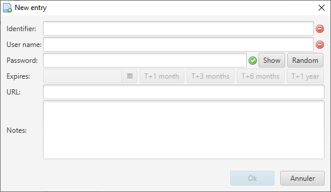

This action is available through the menu entry 'File' → 'New Entry'. A Group must be selected to allow this action.
The created Entry will be added to the currently selected Group. Only two fields are mandatory to be filled: 'Identifier' and 'User name'. Other fields are optional.
The expiration date is used when displaying an Entry but does not block ist usage when exceeded. The URL is used for the quick navigation and Notes are available to save a data along with an Entry.
The password can be written by the user but a password generator is also available by clicking on button 'Random'. Password length and generated characters can be configured.

An icon, on the right side of fields indicates if the input data is correct or not. A tooltip text is also present in case of error in order to advise the user. Here is the list of the checks performed in this dialog window: